Books & Essays
An eclectic collection of highly recommended readings. For a full list of what I've enjoyed and what I'm attempting and failing to read, visit goodreads.
I take obscene liberty in omitting the post-colon parts of some titles.
Nine Favourites
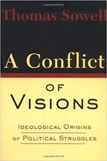
A Conflict of Visions
Thomas Sowell
A breathtaking classification of the different visions of human nature and how they manifest in political and moral disagreement.
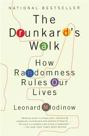
The Drunkard's Walk
Leonard Mlodinow
How easy it is to be fooled by randomness.
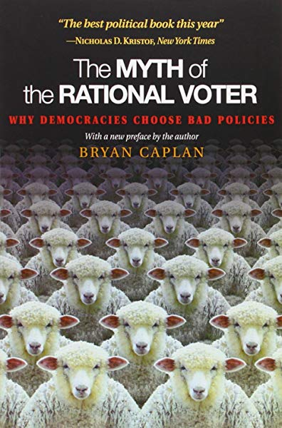
The Myth of the Rational Voter
Bryan Caplan
A persuasive argument that voters mostly don't understand the policies for which they're purpotedly in favour, and an explanation as to why true understanding is not incentivized.
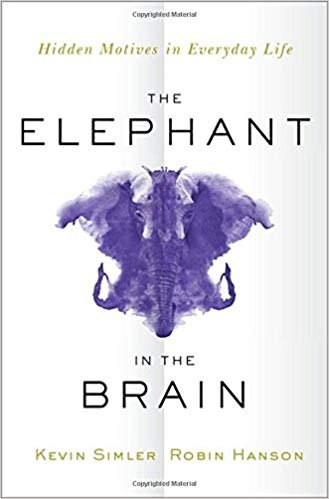
The Elephant in the Brain
Robin Hanson and Kevin Simmler
A terrifying exposure of the true motivations behind many of our actions, many unbeknowst even to ourselves.
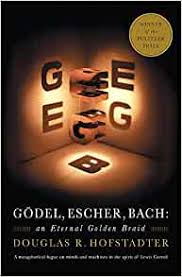
Gödel, Escher, Bach
Douglas Hofstadter
A fabulous fugue on emergence, self-reference, mathematics, tortoises and gramophones.
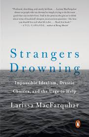
Strangers Drowning
Larissa MacFarquhar
An exploration of what it looks like to truly live by your ethical principles.
By Topic
Authoritarianism | Biographies & Memoirs | Economics & Politics | Ethics | History | Knowledge & Progress | Mortality | Psychology
| Other Science | Fiction | Misc
Authoritarianism
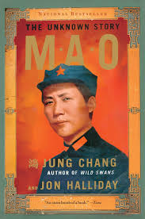
Mao: The Unknown Story
Jung Chang and Jon Halliday
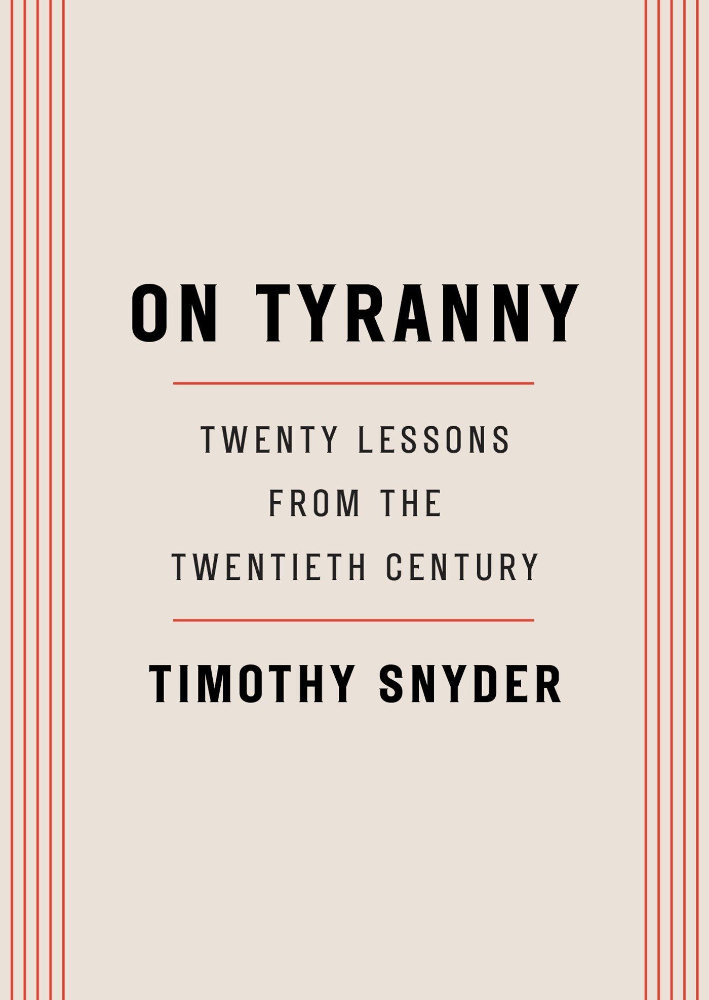
On Tyranny
Timothy Snyder
Biographies & Memoirs
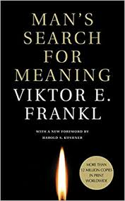
Man's Search for Meaning
Viktor Frankl

Economics & Politics
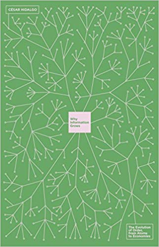
Why Information Grows
César Hidalgo
Ethics
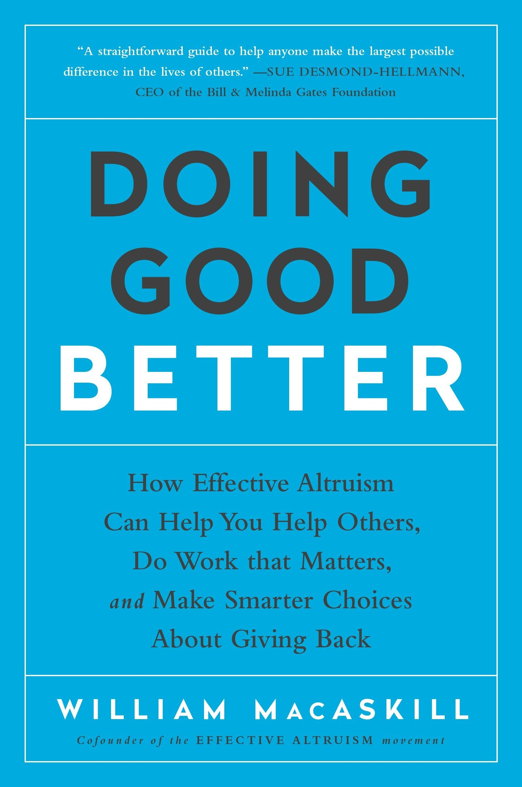
Doing Good Better
Will MacAskill
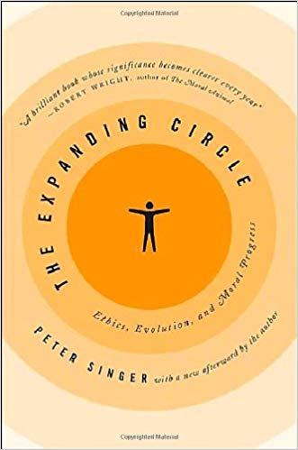
The Expanding Circle
Peter Singer
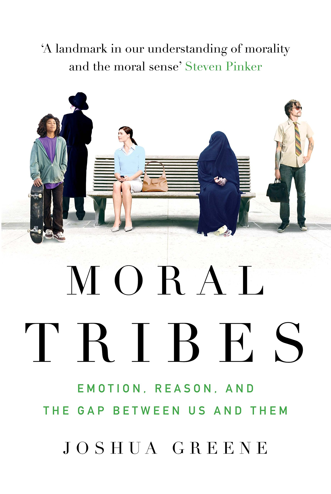
Moral Tribes
Joshua Greene
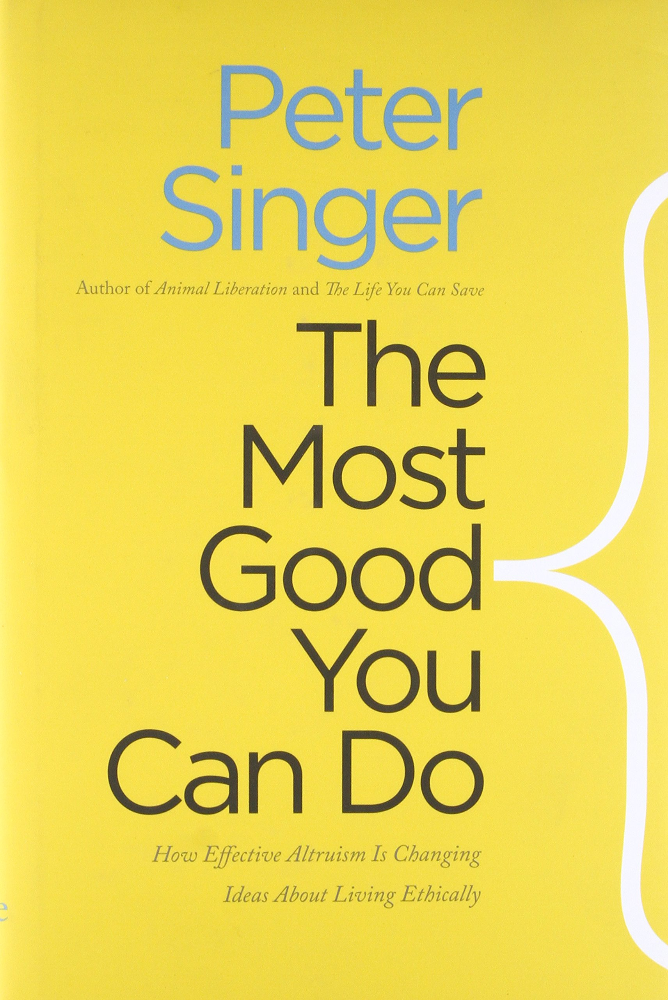
The Most Good You Can Do
Peter Singer
History & Historical Thesis
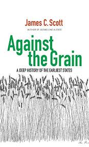
Against the Grain
James Scott
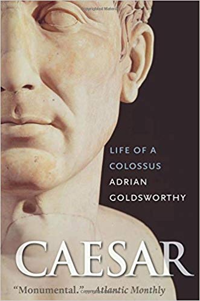
Caesar
Adrian Goldsworthy


Knowledge and Progress
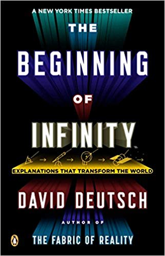
The Beginning of Infinity
David Deutsch
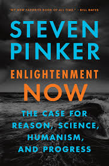
Enlightenment Now!
Steven Pinker

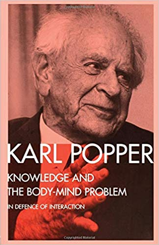
Knowledge and the Body-Mind Problem
Karl Popper
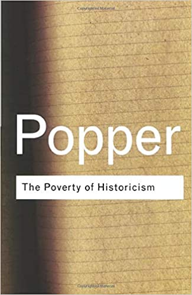
The Poverty of Historicism
Karl Popper
Mortality
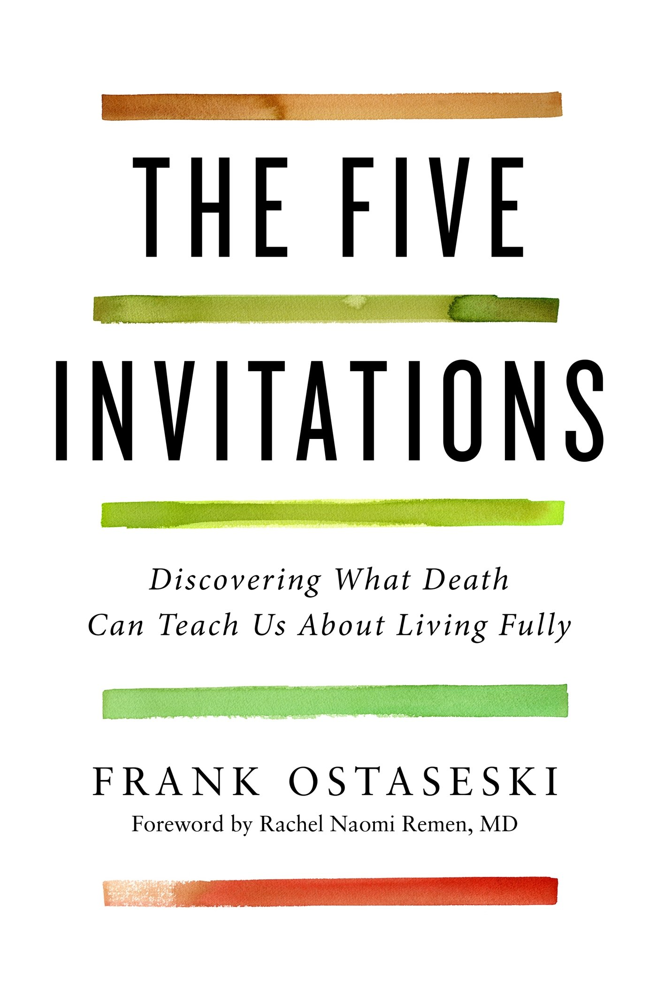
The Five Invitations
Frank Ostaseski
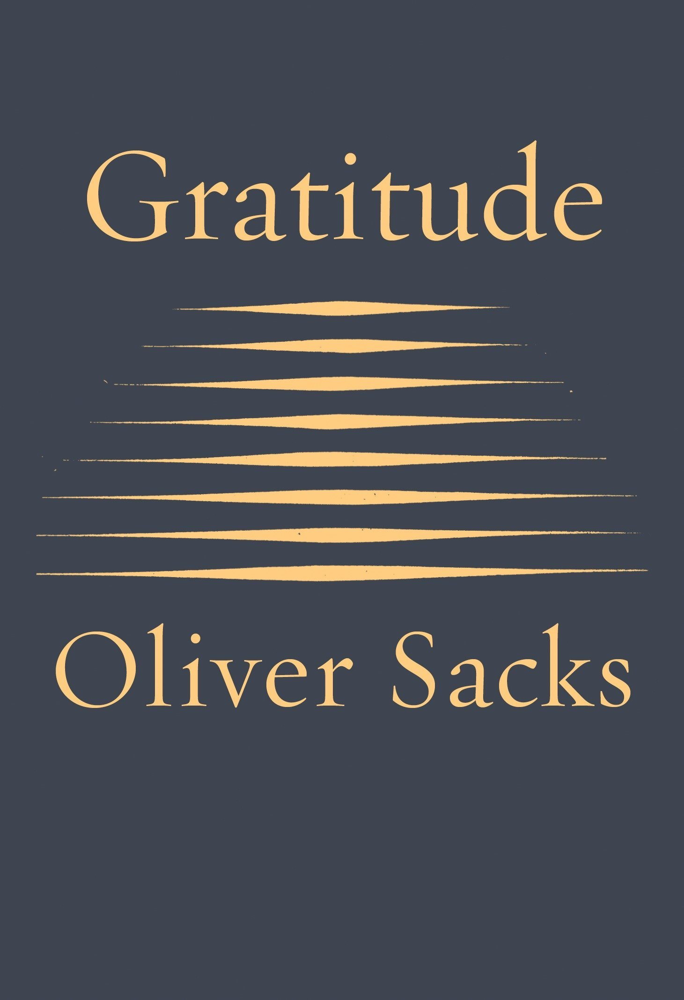
Gratitude
Oliver Sacks
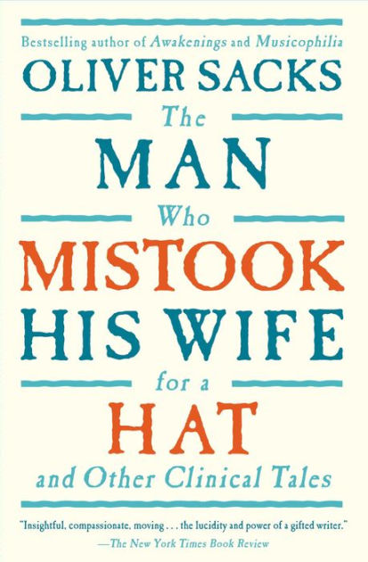
The Man Who Mistook his Wife for a Hat
Oliver Sacks
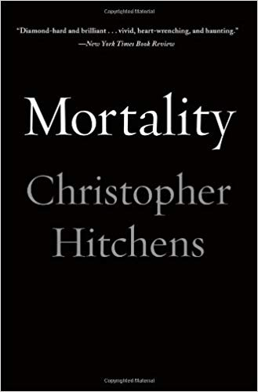
Mortality
Christopher Hitchens
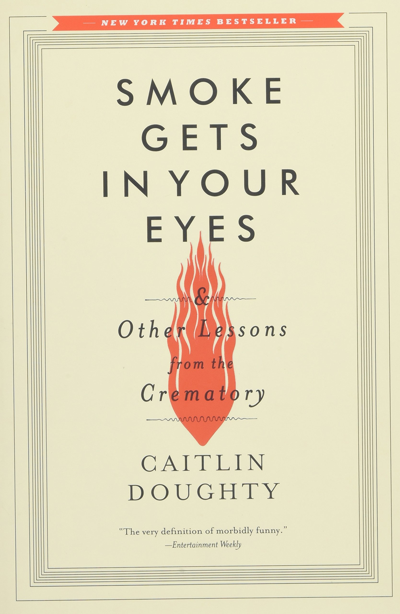
Smoke Gets in your Eyes
Caitlin Doughty
Psychology & Human Nature
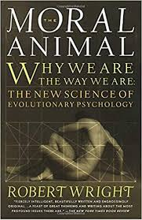
The Moral Animal
Robert Wright
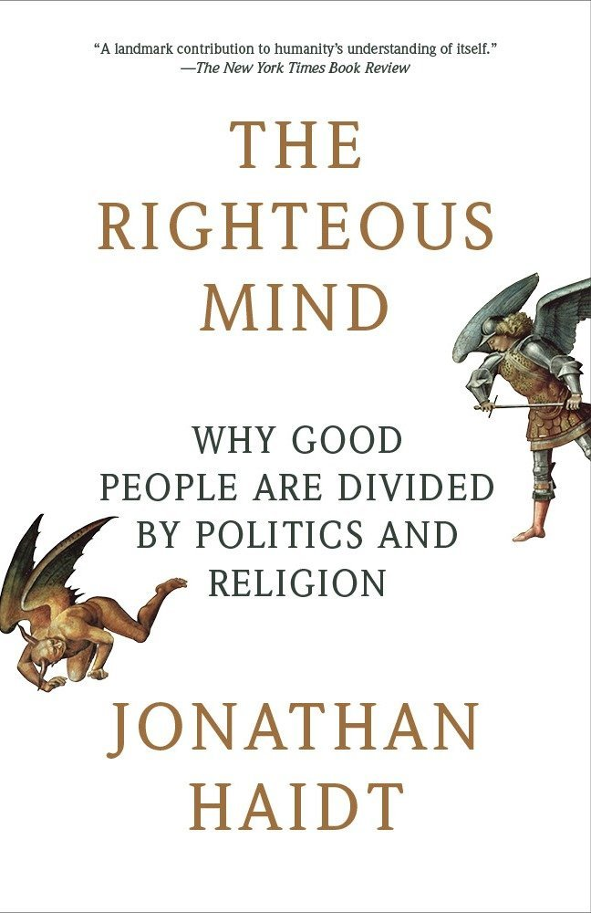
The Righteous Mind
Jonathan Haidt

Other Science
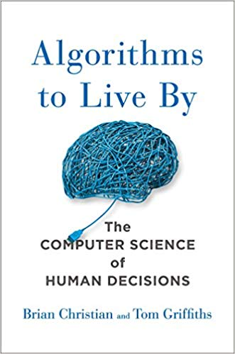
Algorithms to Live By
Brian Christian and Tom Griffiths
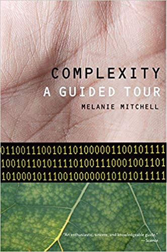
Complexity
Melanie Mitchell
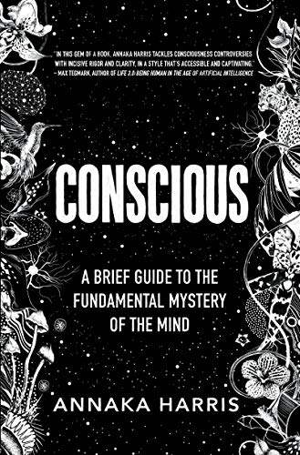
Conscious
Annaka Harris
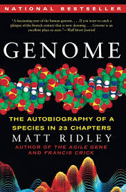
Genome
Matt Ridley
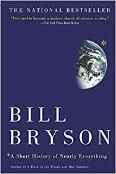
A Short History of Nearly Everything
Bill Bryson
Fiction
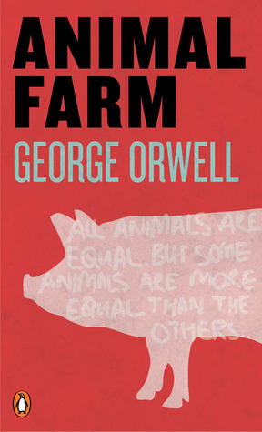
Animal Farm
George Orwell

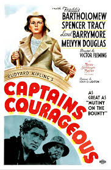
Captains Courageous
Rudyard Kipling
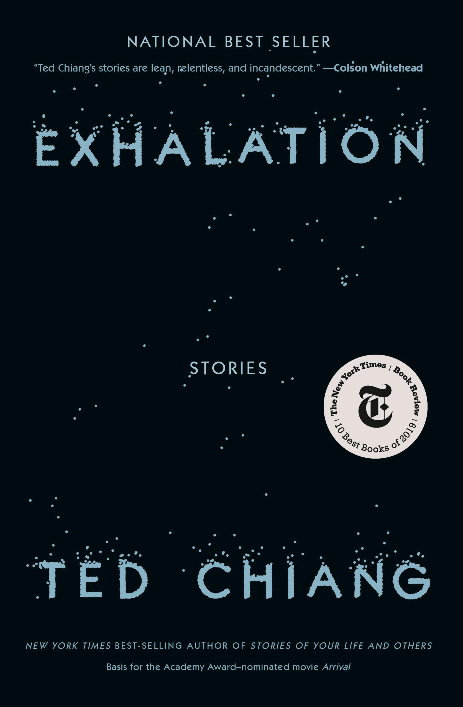
Exhalation: Stories
Ted Chiang
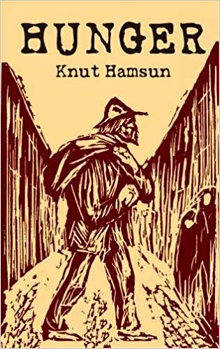
Hunger
Knut Hamsen
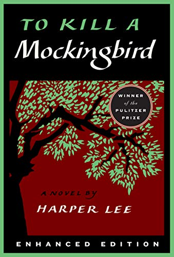
To Kill a Mockingbird
Harper Lee

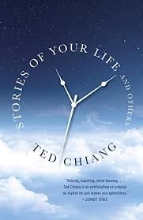
Stories of your Life and Others
Ted Chiang


Misc
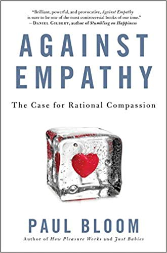
Against Empathy
Paul Bloom
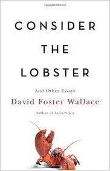
Consider the Lobster and Other Essays
David Foster Wallace

Essays
- Famine, Affluence, and Morality; Peter Singer.
- Harrison Bergeron; Kurt Vonnegut, Jr.
- How to Disagree and Keep your Identity Small; Paul Graham.
- Letter from Birmingham Jail; Martin Luther King, Jr.
- A Modest Proposal; Jonathan Swift.
- Moral Luck; Thomas Nagel.
- On Caring; Nate Soares.
- Science as Falsification; Karl Popper.
- The usefulness of useless knowledge; Abraham Flexner.
- The State of Being Stuck; Ben Orlin.
- The Fable of the Dragon-Tyrant; Nick Bostrom.
- Asymmetric Weapons Gone Bad and Beware the Man of One Study; Scott Alexander.
- The Lottery; Shirley Jackson.
- Three Worlds; Karl Popper.
- All Animals are Equal; Peter Singer.
- If Men Could Menstruate; Gloria Steinem.
- In Praise of Idleness; Bertrand Russell.